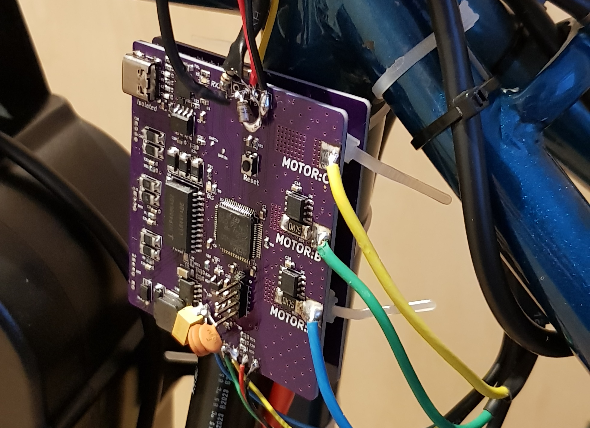
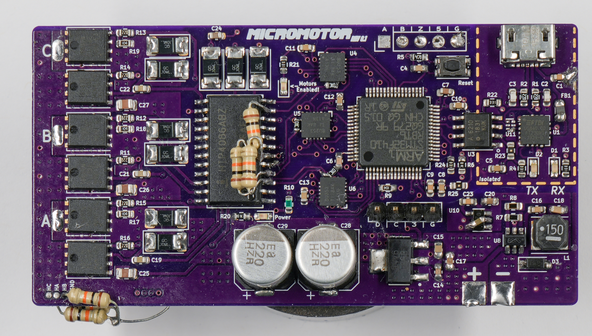
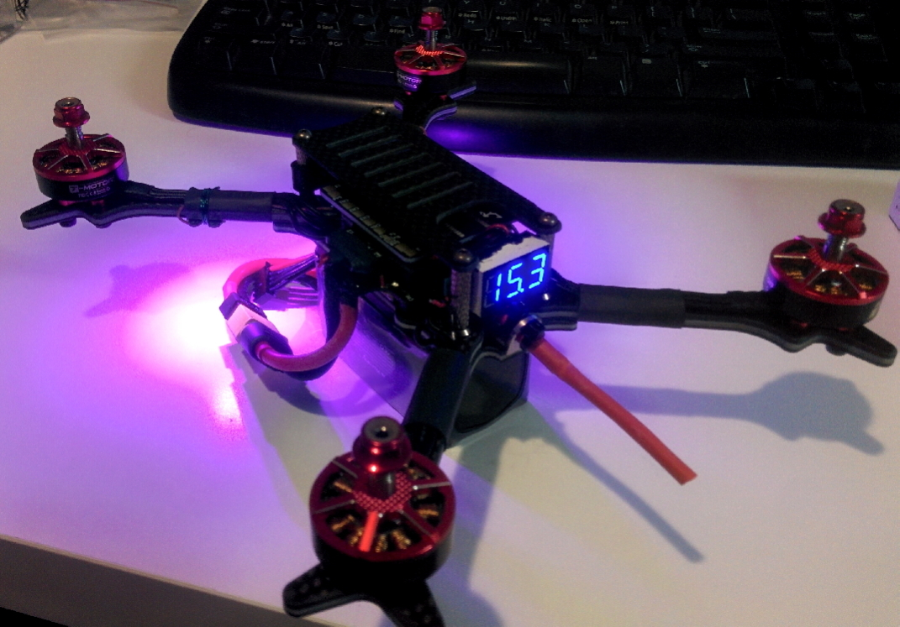

Kyle Hess
Electrical Engineer ⚡ Builder 🔧 Breaker 🔥
Project Highlights
These projects showcase some of the work I have done in teams and as an individual. They have tested my skills and forced me to develop many new ones.

Field Oriented Motor Control + eBike
The final chapter in the BLDC motor saga.
This motor controller employs a Space Vector Modulation scheme using encoder feedback and phase current sensors.
🔬C
💾UART
💡Analog
Learn more

BLDC Driver + Encoder Reader
A BLDC motor driver with a decoder for a quadrature rotary encoder.
The motor and encoder can be combined to accurately measure the motor position.
🔬C
🥽C++
💾UART
Learn more

Incremental Encoder Reader
A decoder for reading and displaying the output of a quadrature rotary encoder.
🔬C
🚀SPI
💾UART
Learn more

Quadcopter Flight Controller
ARM Cortex M4-based flight controller for a custom racing drone.
🔬C
☕C#
🚀SPI
💾UART
Learn more

Brushless Motor Driver PCB
A Brushless DC motor driver PCB utilizing an Atmel ATMEGA328 microcontroller
for three phase MOSFET switching.
Based around the HIP4086A 3-Phase MOSFET driver.
💡Analog
🍩Arduino
🔬C
Learn more
More Projects Here
More projects